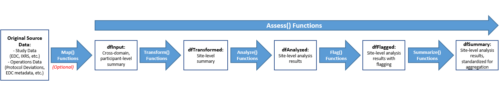

This vignette contains a series of examples showing how to run
analysis workflows for the Good Statistical Monitoring
gsm package using sample data from
{clindata}.
gsm leverages Key Risk Indicators (KRIs) and thresholds to conduct study-level and site-level Risk Based Monitoring for clinical trials.
For more information on the gsm package see the package homepage. The Data Pipeline Vignette provides additional technical details including data specifications and handling of metadata. The Data Analysis Vignette provides detailed information about the nested functions that support the analysis workflows.
{gsm}, {clindata}, and
{safetyData}
Run the following:
## Install devtools
install.packages('devtools')
## Install and load sample raw data
devtools::install_github("Gilead-BioStats/clindata", ref = "main")
library(clindata)
## Install and load sample CDISC-compliant SDTM and ADaM data
install.packages('safetyData')
library(safetyData)
## Install and load gsm
devtools::install_github("Gilead-BioStats/gsm", ref = "main")
library(gsm)To use the most recent development version from GitHub, run:
devtools::install_github("Gilead-BioStats/gsm", ref = "dev")All assessments can be run as standalone workflow that creates useful data summaries and visualizations. gsm is configured to accept rawplus data by default, and that data standard is used here.
Running a single assessment is a 2-step process. We will use the Adverse Event (AE) workflow as an example:
dfInput <- AE_Map_Raw())ae_assess <- AE_Assess(dfInput, strMethod = "NormalApprox))Putting these steps together looks like this:
library(clindata)
library(gsm)
## Map domain-level data to the input data standard for the selected assessment.
## In this case, we are making dfInput from Raw+ clinical data
dfInput <- AE_Map_Raw()
## Run the assessment with the appropriate statistical model.
##For AE, the choices are 'NormalApprox' or 'Poisson' or 'Identity'
ae_assessment_NormalApprox <- AE_Assess(dfInput)
ae_assessment_poisson <- AE_Assess(dfInput, strMethod = "Poisson")Each assessment has representative examples in the help files. The
example above can be reviewed by entering ?AE_Assess into
the console.
Let’s look at an illustrative example of everything that happens
behind the scenes when running an individual Assess()
function. It may be helpful to reference this example alongside the Data
Analysis Vignette, which goes into significantly more detail about
each nested function involved in this workflow. The image below is a
high-level summary:

As in Example 1, we will use the AE workflow for this example.
Start by creating dfInput using sample rawplus data from
{clindata}. Note that AE_Map_Raw() requires
two specific datasets from {clindata}, which include a
subject-level demographics/exposure dataset (dfSUBJ) and a
domain-level dataset (dfAE) that records every adverse
event per subject.
dfInput <- AE_Map_Raw(
dfs = list(
dfAE = clindata::rawplus_ae,
dfSUBJ = clindata::rawplus_dm
)
)The second step is to transform dfInput into site-level
summary data, which is needed to derive the KRI. Two
Transform() functions are available,
Transform_Rate() and Transform_Count(), and
Transform_Rate() is the function that is used with the AE
assessment. Note that strNumeratorCol is a required numeric
column, and strDenominatorCol is an optional numeric
column.
dfTransformed <- Transform_Rate(
dfInput,
strNumeratorCol = "Count",
strDenominatorCol = "Exposure"
)The third step is to analyze the transformed data. Certain
assessments support multiple statistical models/Analyze()
functions, so the user needs to specify certain parameters for the
intended analysis to run. We use the normal approximation method in this
example (the default method for all standard KRIs).
dfAnalyzed <- Analyze_NormalApprox(dfTransformed)After analyzing the transformed data, we will flag sites based on at
least one statistical threshold. Similar to the previous step, multiple
flag functions exist to support the assessment functions. The
Flag_NormalApprox() function is one of several options for
the AE assessment, and has default thresholds of
c(-3, -2, 2, 3).
Both are considered to be outliers, but “Red” sites are more extreme outliers.
dfFlagged <- Flag_NormalApprox(dfAnalyzed, vThreshold = c(-3, -2, 2, 3))Next, we will summarize the flagged data. The
Summarize() function will only keep the most relevant
columns from dfFlagged for a given assessment.
dfSummary <- Summarize(dfFlagged)Finally, we will create a chart that helps to identify/visualize
flagged sites. When using the normal approximation method, we can create
upper and lower bounds using the
Analyze_NormalApprox_PredictBounds() function.
Using the bounds we create and the flagged data frame, we can create a scatter plot. Any sites that are plotted outside of the bounds will be yellow or red. Yellow points indicate “At Risk” sites, and red points indicate “Flagged” sites.
dfBounds <- Analyze_NormalApprox_PredictBounds(dfTransformed, vThreshold = c(-3, -2, 2, 3))
chart <- Visualize_Scatter(dfFlagged, dfBounds)Reviewing this step-by-step example will allow the user to better
understand each intermediate function that runs within an
Assess() function during KRI derivation. gsm
allows the user to generate the same results in Example 1 and Example 2,
with additional error-checking and metadata, and interactive data
visualizations. For reference, the code from Example 1 is repeated
below:
dfInput <- AE_Map_Raw()
ae_assessment <- AE_Assess(dfInput)Let’s take a look at running multiple assessments at once, instead of focusing solely on AEs.
Running multiple assessments in gsm is made possible
by the Study_Assess() function. By default,
Study_Assess() uses sample rawplus data from
{clindata} that is hard-coded to the lData
parameter. Users can also provide their own rawplus input data to the
lData parameter.
{clindata}
To run multiple assessments using the sample rawplus data from
{clindata}, the user can run the following:
library(gsm)
library(clindata)
library(safetyData)
multiple_assessments <- Study_Assess()User-provided rawplus data will likely come from rawplus case report
data. The example below illustrates that a user can pass a named list of
rawplus data to the lData parameter.
It is important to note that lData expects a
named list. To see a list of default data frame names, run
gsm::Read_Mapping(strDomain = "rawplus").
library(gsm)
library(clindata)
library(dplyr)
## Include AE data where aetoxgr (Standard Toxicity Grade) is not "MILD"
dfAE <- clindata::rawplus_ae %>%
filter(
aetoxgr != "MILD"
)
## Specify Raw+ data domains
dfSUBJ <- clindata::rawplus_dm
dfIE <- clindata::rawplus_ie
dfPD <- clindata::ctms_protdev
dfCONSENT <- clindata::rawplus_consent
## Create named list of assessment data
assessment_data <- list(
dfAE = dfAE,
dfIE = dfIE,
dfPD = dfPD,
dfCONSENT = dfCONSENT,
dfSUBJ = dfSUBJ
)
## Run multiple assessments
multiple_assessments <- Study_Assess(lData = assessment_data)Note that Study_Assess() provides verbose console output
alerting the user to success, warnings, or errors with the workflow.
The Make_Snapshot() function is a wrapper around
Study_Assess(), but differs in that it provides aggregated
metadata to supplement the analyses run via Study_Assess().
This includes study and site-level CTMS data, as well as workflow and
configuration metadata, that is used in downstream applications such as
reporting, Shiny apps, and more.
To create a snapshot using the default inputs from gsm
and {clindata}, simply run the following:
library(gsm)
snapshot <- Make_Snapshot()The snapshot object contains three elements: -
lSnapshotDate: The date that the snapshot was created. Can
be provided as an argument to strAnalysisDate, or if no
date is provided, the current date is used. - lSnapshot:
List of aggregated analysis results and metadata. -
lStudyAssessResults: Output of
Study_Assess().
Study_Assess()
The Study_Report() function creates the
Assessment Overview Report, which is an HTML document
that contains tables, visualizations, and error logging for all
assessments run in the Study_Assess() workflow.
Let’s create a report using sample data from
{clindata}:
library(gsm)
library(clindata)
multiple_assessments <- Study_Assess()
Study_Report(lAssessments = multiple_assessments)The report will render and be saved to your current working
directory. If you would like the report saved in a different location,
you can set an output directory using the strOutpath
argument in the Study_Report() function.
Make_Snapshot()
The Study_Report() function also takes on optional
arguments (dfSite and dfStudy) that are used
to provide site and study-level reporting. This includes study-level
CTMS data displayed in a summary table at the top of the report, and an
enhanced Study Overview table.
library(gsm)
library(clindata)
snapshot <- Make_Snapshot()
Study_Report(
lAssessments = snapshot$lStudyAssessResults,
dfSite = snapshot$lSnapshot$status_site
)The Assessment Overview Report contains a Data Check
Summary table in the appendix, which can be helpful for troubleshooting
issues with input data provided to lData in
Study_Assess().
To view the report directly as an object in your IDE, run:
library(gsm)
library(clindata)
multiple_assessments <- Study_Assess()
Study_AssessmentReport(lAssessments = multiple_assessments, bViewReport = TRUE)By default, all Assess() functions return a
visualization whether run individually or within the
Study_Assess() workflow. For example, the scatter plot for
the AE assessment can be viewed by calling
AE_Assess(dfInput)$lCharts$scatter.
gsm creates static and interactive charts using
ggplot2 and a custom JavaScript charting library
{rbm-viz}.
Customizing interactive JavaScript widgets will be covered in a separate vignette.
Below is an example of creating a static ggplot2
scatter plot that uses the default normal approximation method for
AE_Assess() and rawplus data from
{clindata}:
library(gsm)
library(clindata)
## Map domain-level data to the input data standard for the selected assessment
dfInput <- AE_Map_Raw()
## Run the assessment
ae_assessment <- AE_Assess(dfInput)
## Create threshold boundaries
dfBounds <- Analyze_NormalApprox_PredictBounds(
dfTransformed = ae_assessment$lData$dfTransformed,
vThreshold = c(-3, -2, 2, 3)
)
## Create the visualization
Visualize_Scatter(
dfSummary = ae_assessment$lData$dfFlagged,
dfBounds = dfBounds
)As mentioned in Appendix 1 of the Data
Pipeline Vignette, Study_Assess() triggers a workflow
that uses pre-defined YAML specifications that organize all of the
required metadata for a given assessment or set of assessments.
In some cases, the user might want to configure their own mappings, which can be done by providing custom YAML mappings for one or more assessments.
Let’s take a look at a few examples of editing YAML files for a custom workflow below.
There are filter steps in the default specification for the AE
Assessment, but we want to add an additional filter. Let’s add a step
that filters the dfAE data frame so all values of
aetoxgr == "MODERATE" (i.e., we select for AEs with a
moderate toxicity grade):
The default mappings for the AE Assessment are saved under KRI 0001,
i.e., kri0001.yaml:
steps:
- name: FilterDomain
inputs: dfAE
output: dfAE
params:
strDomain: dfAE
strColParam: strTreatmentEmergentCol
strValParam: strTreatmentEmergentVal
- name: FilterDomain
inputs: dfAE
output: dfAE
params:
strDomain: dfAE
strColParam: strSeriousCol
strValParam: strNonSeriousVal
- name: AE_Map_Raw
inputs:
- dfAE
- dfSUBJ
output: dfInput
- name: AE_Assess
inputs: dfInput
output: lResults
params:
strGroup: "Site"
vThreshold: null
strMethod: "Poisson"First, we want to add an additional FilterDomain() step
to the workflow specification to select only moderate AEs. Because
dfAE needs to be filtered before it is used in
AE_Map_Raw(), the filter steps need to be placed first in
the workflow.
Let’s name the custom YAML file
ae_assessment_moderate.yaml. It reads as follows:
steps:
- name: FilterDomain
inputs: dfAE
output: dfAE
params:
strDomain: dfAE
strColParam: strTreatmentEmergentCol
strValParam: strTreatmentEmergentVal
- name: FilterDomain
inputs: dfAE
output: dfAE
params:
strDomain: dfAE
strColParam: strSeriousCol
strValParam: strNonSeriousVal
- name: FilterDomain
inputs: dfAE
output: dfAE
params:
strDomain: dfAE
strColParam: strModerateCol
strValParam: strModerateVal
- name: AE_Map_Raw
inputs:
- dfAE
- dfSUBJ
output: dfInput
- name: AE_Assess
inputs: dfInput
output: lResults
params:
strGroup: "Site"
vThreshold: null
strMethod: "Poisson"After setting up the custom YAML mapping, there are a few more steps
a user must take before executing Study_Assess():
gsm::MakeWorkflowList().lAssessmentsCustom$kri0001 with the custom
YAML file (ae_assessment_moderate.yaml).{clindata}.strTypeCol on.Study_Assess() workflow.
library(gsm)
library(clindata)
library(yaml)
## 1. Read in default workflow mapping
lAssessmentsCustom <- MakeWorkflowList()
## 2. Apply custom AE assessment mapping
lAssessmentsCustom$kri0001 <- yaml::read_yaml("ae_assessment_moderate.yaml")
## 3. Add a name value, i.e., the variable you want to filter on
lAssessmentsCustom$kri0001$name <- "aetoxgr"
## 4. Add the location of the custom YAML file
lAssessmentsCustom$kri0001$path <- getwd()
## 5. Read in default data set mappings from `{clindata}`
lMappingCustom <- gsm::Read_Mapping()
## 6. Add strTypeVal, i.e., the value for strTypeCol to filter on
lMappingCustom$dfAE$strGradeCol <- "MODERATE"
## 7. Run the Study_Assess workflow
customStudy <- Study_Assess(lMapping = lMappingCustom, lAssessments = lAssessmentsCustom)